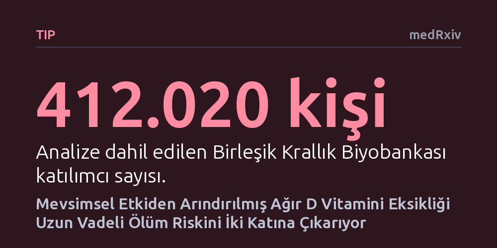

TIP · medRxiv · 2026-10-11
İngiltere'de 412 binden fazla kişinin verilerini inceleyen araştırmacılar, mevsimsel dalgalanmalardan arındırılmış D vitamini düzeylerinin ölüm ve kronik hastalıklarla ilişkisini araştırdı. Kış sonu dip seviyesi 5 ng/mL'nin altında kalan ağır eksikliğin, ölüm riskini iki katına çıkardığı ve çoklu organ hastalıklarıyla ilişkili olduğu bulundu.
D vitamini seviyesinin ölçüldüğü mevsime göre düzeltilmesi, ağır eksikliğin getirdiği yaşamsal risklerin tahlil tarihinden bağımsız biçimde doğru değerlendirilmesini sağlıyor.

D vitamini araştırmalarında uzun süredir aşılması zor bir metodolojik sorun bulunuyor: Kandaki D vitamini düzeyi güneşe maruz kalma süresine bağlı olarak mevsimler arasında belirgin dalgalanmalar gösterir. Yaz aylarında ölçülen bir değer kişiyi sağlıklı gösterirken, aynı kişinin kış sonunda ölçülen değeri ağır eksiklik tablosu çizebilir. Bu durum, tahlil tarihine bağlı tesadüfi sınıflandırma hatalarına yol açmakta ve vitamin eksikliğinin gerçek sağlık riskleriyle bağını bulanıklaştırmaktadır.
Araştırmacılar, bu dönemsel gürültüyü temizleyip herkesin değerini ortak bir taban çizgisine çekerek D vitamininin vücuttaki uzun vadeli etkilerini yeniden sınamak istedi. Amaç; ağır eksikliğin kalp krizinden demansa kadar uzanan geniş bir hastalık yelpazesi ve erken ölümle doğrudan ilişkili olup olmadığını bağımsız bir büyük veri kümesinde doğrulamaktı.
Çalışmada, derinlemesine fenotipik veriler içeren Birleşik Krallık Biyobankası'ndaki 412.020 katılımcının kan örnekleri incelendi. Araştırma ekibi, sekiz harmonikli matematiksel bir model kurarak her bireyin tek seferlik ölçümünü kış sonundaki dip seviyesine (nadir) uyarladı. Katılımcılar bu kış sonu eşdeğerine göre 5 ng/mL'den az, 5-10, 10-15, 15-20 ve 20 ng/mL üzeri olmak üzere beş gruba ayrıldı.
Sağlık durumu zaten kötüleştiği için D vitamini düzeyi düşen kişilerin yanıltıcı sonuç doğurmasını (ters nedensellik) engellemek adına analize bir yıllık gecikmeyle başlandı ve bazı modellerde bu bekleme süresi beş yıla kadar uzatıldı. Ayrıca sosyoekonomik durum, yaş ve yaşam tarzı gibi karıştırıcı faktörleri dengelemek amacıyla nedensel çıkarım modelleri kullanıldı.
Takip sürecinde kaydedilen 31.197 ölüm incelendiğinde, kış sonu seviyesi 5 ng/mL'nin altında kalan çok ağır eksiklik grubunda ölüm tehlikesi, 20 ng/mL ve üzeri olanlara kıyasla 2,03 kat yüksek çıktı. İstatistiksel ağırlıklandırma uygulandığında, 10 yıllık ölüm oranı ağır eksiklik grubunda yüzde 9,7 iken, yeterli düzeydeki grupta yüzde 4,8 olarak belirlendi. Eksiklik hafifledikçe riskin de kademeli olarak azaldığı görüldü.
Analiz çoklu organ sistemlerini incelediğinde; ağır eksikliğin diyabet, kalp krizi, inme, demans, diyabetik retinopati ve son dönem böbrek yetmezliği ile güçlü bağlar taşıdığı saptandı. Dikkat çekici bir istisna olarak cilt kanseri riski tam tersi yönde seyretti; yani D vitamini seviyesi yüksek olanlarda cilt kanseri daha sık görüldü. Bu durum, güneşe ve ultraviyole ışınlara daha fazla maruz kalmanın beklenen bir yansıması olarak açıklandı.
Yazarlar, mevsimsel olarak dengelenmiş D vitamini düzeyinin vücuttaki "tekrarlanabilir bir sistemik kırılganlık durumunu" temsil ettiğini ve takvim etkisinden arındırmanın ölçüm sapmalarını azalttığını belirtiyor. Elde edilen bulgular, daha önce İsrail ve ABD'de yapılan geniş çaplı elektronik sağlık kaydı çalışmalarındaki sonuçları bağımsız olarak doğruluyor.
Bununla birlikte, gözlemsel verilerdeki bu güçlü bağ, sadece takviye hapı almanın tüm bu riskleri tamamen ortadan kaldıracağını doğrudan kanıtlamaz. Her ne kadar geçmiş eczane verileri takviye kullanımının risk düşüşüyle örtüştüğünü gösterse de, net bir klinik tavsiye için hedef kitleyi ve dozu belirleyen kontrollü müdahale çalışmalarının sonuçları beklenmelidir.